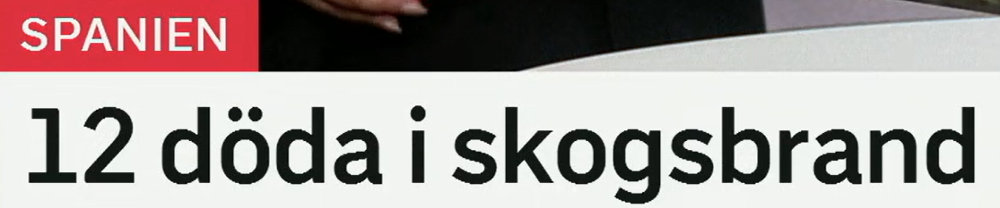
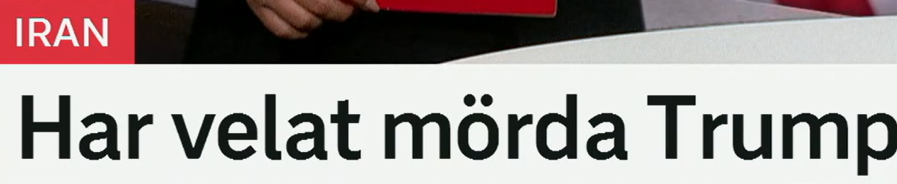
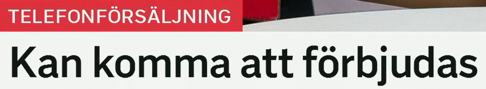
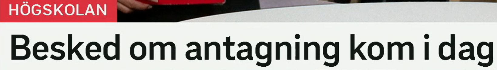
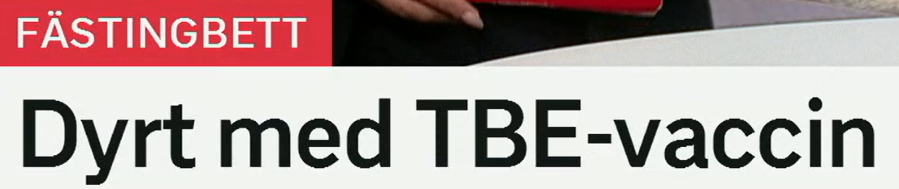
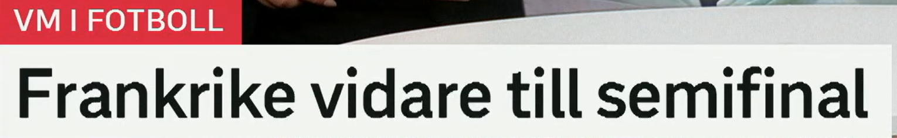

Snipaste_2026-07-11_21-45-01.png
12 döda i skogsbrand
森林火灾中 12 人死亡。
SVT Rubriker · Svenska ord
2026-07-10｜词汇扩展、同义词与高频表达。本页基于文件夹中的 SVT 新闻标题截图整理，重点学习标题里的短语结构、动词变形和新闻高频搭配。
数据来源：本文件夹内 SVT 标题截图
森林火灾中 12 人死亡。
曾想谋杀特朗普。
可能会被禁止。
录取结果今天公布。
TBE 疫苗费用高。
法国晋级半决赛。

中文：森林火灾中 12 人死亡。
标题大意：这是灾害新闻中极常见的压缩结构：数字 + `döda` + `i` + 事件。标题只说明死亡人数和事件类型，不展开原因。
含义：死的；`12 döda` 可理解为“12 名死者/12 人死亡”。
变形：död, dött, döda。动词是 `dö`，过去式 `dog`，完成分词 `dött`。
近义表达：omkommen, avliden。反义词：levande。
高频搭配：flera döda, hittades död, död efter olycka, döda i brand。
场景：突发、事故、犯罪新闻中使用，语气严肃。
含义：森林火灾；由 `skog` 森林 + `brand` 火灾构成。
变形：en skogsbrand, skogsbranden, skogsbränder, skogsbränderna。
近义表达：brand i skogen, naturbrand。反义或对照：släckning, regn。
高频搭配：bekämpa skogsbrand, sprida sig, kraftig skogsbrand, risk för skogsbrand。
场景：天气、灾害、气候与地方新闻。

中文：曾想谋杀特朗普。
标题大意：标题使用 `har velat + 动词原形`，表示截至现在可被报道的过去意图。截图没有给出完整主语，学习时不要自行补充新闻事实。
含义：曾经想要、一直有意；`velat` 是 `vilja` 的 supinum。
变形：vill, ville, velat。结构：`har velat + 动词原形`。
近义表达：har planerat att, har haft för avsikt att, har önskat att。
高频搭配：har velat stoppa, har velat ändra, har velat se, har velat mörda。
场景：政治、犯罪、人物意图报道。语气比单纯 `vill` 更强调此前已有的意愿。
含义：谋杀；比 `döda` 更强调非法、蓄意杀害。
变形：mördar, mördade, mördat。名词：ett mord；行为者：mördare。
近义表达：döda, ta livet av。反义或对照：rädda, skydda。
高频搭配：misstänks för mord, försöka mörda, dömd för mord, mörda en politiker。
场景：犯罪新闻和法律语境，词义很重，日常慎用。

中文：可能会被禁止。
标题大意：栏目词显示主题是电话销售。标题本身重点在结构 `kan komma att + 动词`，表示“可能将会……”，并用 `förbjudas` 的 s-passiv 表示被禁止。
含义：可能会、将有可能；比单独 `kan` 更有新闻预测感。
结构：`kan komma att + 动词原形`。
近义表达：kan bli, väntas, riskerar att, kan komma att bli。
高频搭配：kan komma att påverka, kan komma att ändras, kan komma att förbjudas。
场景：政策、经济、法律变化的新闻标题中很常见。
含义：禁止；`förbjudas` 是被动形式，“被禁止”。
变形：förbjuder, förbjöd, förbjudit；被动：förbjuds, förbjöds, förbjudits。
近义词：stoppa, förhindra。反义词：tillåta, godkänna。
高频搭配：förbjuda försäljning, bli förbjuden, förbud mot, totalförbud。
场景：法律、政策、消费权益新闻。

中文：录取结果今天公布。
标题大意：围绕高校录取，使用 `besked om` 表示“关于……的通知/消息”，`kom i dag` 则是“今天出来/来了”。
含义：通知、答复、消息；标题中指录取结果通知。
变形：ett besked, beskedet, besked, beskeden。
近义词：meddelande, svar, information。反义或对照：ovisshet。
高频搭配：få besked, ge besked, vänta på besked, besked om antagning。
场景：教育、行政、医疗、招聘等正式通知语境。
含义：录取、招收；来自动词 `anta`，在教育申请中非常高频。
变形：en antagning, antagningen。相关词：antagen 被录取的，ansökan 申请。
近义表达：urval, intagning。反义或对照：avslag, nekad plats。
高频搭配：besked om antagning, första antagningen, bli antagen, söka till högskolan。
场景：高校、职业教育、课程申请。

中文：TBE 疫苗费用高。
标题大意：使用 `dyrt med + 名词` 表达“……很贵/成本高”。栏目词 `FÄSTINGBETT` 表示“蜱虫叮咬”相关主题。
含义：贵的、昂贵的；`dyrt` 是 ett-形式，也可作副词性用法。
变形：dyr, dyrt, dyra。比较级：dyrare；最高级：dyrast。
近义词：kostsam, prishög。反义词：billig, prisvärd。
高频搭配：dyrt med, för dyrt, dyrare mat, höga kostnader。
场景：消费、医疗、经济新闻和日常口语都常见。
含义：疫苗；`TBE-vaccin` 是复合词，指 TBE 疫苗。
变形：ett vaccin, vaccinet, vaccin, vaccinen。动词：vaccinera。
近义或相关词：spruta, dos, vaccination。反义或对照：ovaccinerad。
高频搭配：ta vaccin, få vaccin, vaccin mot TBE, tredje dosen。
场景：健康、医疗、公共卫生新闻。

中文：法国晋级半决赛。
标题大意：体育标题里经常省略动词，`vidare till` 就能表达“晋级到……”。标题没有说明比分或比赛过程。
含义：继续向前；体育中常指“晋级”。
常见结构：`gå vidare`, `vara vidare`, `vidare till semifinal/final`。
近义表达：gå vidare, avancera。反义表达：åka ur, slås ut。
高频搭配：vidare till final, gå vidare i VM, ta sig vidare。
场景：体育新闻尤其高频，语气简短利落。
含义：半决赛；决赛是 `final`，四分之一决赛是 `kvartsfinal`。
变形：en semifinal, semifinalen, semifinaler, semifinalerna。
近义或相关词：slutspel, final, kvartsfinal。反义或对照：gruppspel。
高频搭配：nå semifinal, spela semifinal, gå till semifinal, semifinalplats。
场景：体育赛制与赛事报道。
| 瑞典语 | 中文意思 | 高频搭配 | 近义表达 | 例句 | 记忆提示 |
|---|---|---|---|---|---|
| död / döda | 死亡的；死者 | flera döda, död efter olycka | omkommen, avliden | Minst två är döda.｜至少两人死亡。 | `döda` 可作复数形容词，也可名词化。 |
| skogsbrand | 森林火灾 | kraftig skogsbrand, risk för skogsbrand | brand i skogen | Skogsbranden spred sig.｜森林火灾蔓延了。 | `skog + brand` 的复合词。 |
| brand | 火灾 | släcka brand, starta brand | eldsvåda | Branden är under kontroll.｜火势已受控。 | 和英语 brand 不同，不是“品牌”。 |
| har velat | 曾想、一直想 | har velat ändra, har velat stoppa | har haft för avsikt att | Hon har velat studera länge.｜她一直想学习。 | `velat` 是 `vilja` 的完成式核心。 |
| mörda | 谋杀 | försöka mörda, dömd för mord | döda, ta livet av | Polisen utreder mordet.｜警方调查谋杀案。 | `mord` 是名词，“谋杀”。 |
| kan komma att | 可能会 | kan komma att ändras, påverka | kan bli, väntas | Reglerna kan komma att ändras.｜规则可能会改变。 | 新闻预测感比单独 `kan` 更强。 |
| förbjuda | 禁止 | förbjuda försäljning, förbud mot | stoppa, förhindra | De vill förbjuda varan.｜他们想禁止该商品。 | 被动常见：`förbjudas`, `förbjuds`。 |
| telefonförsäljning | 电话销售 | förbjuda telefonförsäljning | försäljning via telefon | Telefonförsäljning kritiseras.｜电话销售受到批评。 | 长复合词：telefon + försäljning。 |
| besked | 通知、答复 | få besked, vänta på besked | svar, meddelande | Vi fick besked i dag.｜我们今天收到通知。 | 常用于正式结果。 |
| antagning | 录取 | besked om antagning, bli antagen | intagning, urval | Antagningen är klar.｜录取完成了。 | `anta` 是“录取/采纳”。 |
| kom i dag | 今天出来/来了 | beskedet kom, svaret kom | publicerades, meddelades | Svaret kom i morse.｜答复今早来了。 | 瑞典语常用 `kom` 表示结果“出来”。 |
| högskolan | 高校、高等教育 | söka till högskolan | universitetet | Hon söker till högskolan.｜她申请高校。 | 栏目词可帮助理解标题领域。 |
| dyrt med | ……很贵 | dyrt med vaccin, dyrt med el | kostsamt med | Det är dyrt med el.｜电费很贵。 | `dyrt med + 名词` 是口语和新闻都自然的结构。 |
| vaccin | 疫苗 | vaccin mot TBE, ta vaccin | vaccination, dos | Vaccinet skyddar mot sjukdom.｜疫苗预防疾病。 | `vaccin mot` 表示“针对……的疫苗”。 |
| fästingbett | 蜱虫叮咬 | efter fästingbett, risk vid fästingbett | bett av fästing | Fästingbett kan ge besvär.｜蜱虫叮咬可能造成不适。 | `bett` 是“叮咬/咬伤”。 |
| vidare till | 晋级到、继续到 | vidare till semifinal/final | gå vidare, avancera | Laget är vidare till final.｜球队晋级决赛。 | 体育标题里常省略 `är`。 |
| semifinal | 半决赛 | nå semifinal, spela semifinal | slutspel | Semifinalen spelas i kväll.｜半决赛今晚举行。 | `semi-` 表“半”，`final` 是决赛。 |
| VM i fotboll | 足球世界杯/世锦赛 | spela VM, gå vidare i VM | fotbolls-VM | Frankrike är vidare i VM.｜法国在世界杯晋级。 | 瑞典语体育新闻常用缩写。 |
| i dag | 今天 | kom i dag, börjar i dag | denna dag | Lagen börjar gälla i dag.｜法律今天开始生效。 | 现代瑞典语常写作分开：`i dag`。 |
| i + 事件 | 在……中 | döda i brand, skadade i olycka | vid, under | Flera skadades i olyckan.｜多人在事故中受伤。 | 灾害事故标题特别高频。 |
`12 döda i skogsbrand` 省略了完整谓语，新闻标题用数字快速突出伤亡规模。类似：`Tre skadade i olycka`, `Flera döda efter attack`。
`Har velat mörda` 用现在完成式回看过去意图。标题常省略主语，读者要从栏目或报道上下文补足。
这是新闻里表达未来可能变化的优雅结构，比 `kan` 更正式。遇到政策、价格、规则时尤其高频。
`förbjudas` 表示“被禁止”。瑞典语新闻常用 `-s` 被动压缩句子：`stoppas`, `höjs`, `sänks`, `förbjuds`。
`besked om antagning` 是“关于录取的通知”。同类有 `besked om stöd`, `besked om ersättning`, `besked om beslut`。
`Frankrike vidare till semifinal` 可还原为 `Frankrike är vidare till semifinal`。体育标题追求短促，`vidare till` 本身就足够表达晋级。
1. skogsbrand 2. besked 3. antagning 4. förbjuda 5. vidare 6. fästingbett
1. 森林火灾；2. 通知/答复；3. 录取；4. 禁止；5. 继续向前/晋级；6. 蜱虫叮咬。
1. Reglerna kan komma ___ ändras.
2. Vi väntar ___ besked.
3. Det är dyrt ___ TBE-vaccin.
4. Frankrike är vidare ___ semifinal.
1. att 2. på 3. med 4. till
1. 有 12 人在森林火灾中死亡。
2. 电话销售可能会被禁止。
3. 录取结果今天公布。
4. 法国晋级半决赛。
1. 12 döda i skogsbrand / Tolv personer är döda i en skogsbrand.
2. Telefonförsäljning kan komma att förbjudas.
3. Besked om antagning kom i dag.
4. Frankrike är vidare till semifinal.
复习建议：今天这组特别适合背“标题骨架”：`数字 + döda i...`、`kan komma att...`、`besked om...`、`dyrt med...`、`vidare till...`。掌握这些骨架后，换名词就能读懂很多 SVT 标题。